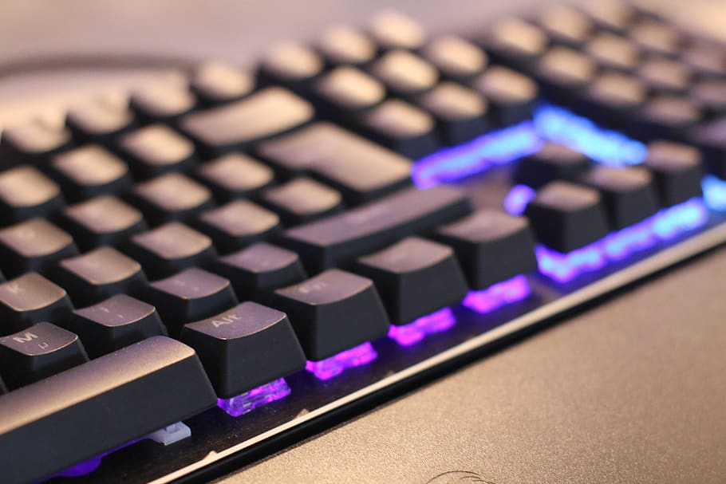

Comparatif des meilleurs claviers méca pour gamer.
Comparatif publié le 01 novembre 2020. Mis à jour le 08 novembre 2020.
Lorsque vous achetez un équipement de jeu pour PC ou que vous
construisez votre propre PC de jeu, il y a de fortes chances que vous
passiez beaucoup de temps à choisir la meilleure carte graphique PC,
la meilleure carte mère et le meilleur processeur pour votre machine.
Vous passez probablement même beaucoup de temps à choisir le boîtier
le plus cool pour votre machine. Mais avez-vous déjà beaucoup réfléchi
à votre
clavier ?
Si les jeux sont devenus beaucoup plus "casuals" ces dernières années,
les meilleurs jeux nécessitent encore souvent des grosses sessions de
jeu assez longues. Pensez simplement à votre Batlle Royale typique,
pour enchaîner les Top 1 il faut s'investir. En général rares sont les
sessions de moins de 20 minutes. Généralement ce sont plus des longues
heures de jeux que l'on enchaîne.

Un clavier méca pour gamer comporte généralement des
touches mécaniques bien espacées et faciles à utiliser pendant de
longues périodes. De plus, la forme du clavier est généralement conçue
pour s'adapter parfaitement à vos mains, de sorte que vous pouvez
utiliser votre clavier pendant de plus longues périodes sans vous
blesser les mains et les poignets.
Autre point clé, le temps de réaction avec un clavier
méca, le temps de réaction est plus élevé et c'est parfois ce temps
qu'il va manquer pour assurer le kill.
Le top des claviers méca,
les claviers haut de gamme.
Il y a les bons claviers méca et l'élite des claviers gamers (et
bien sûr quelques mauvais claviers de temps en temps), la frontière
qui sépare les deux est parfois mince. Beaucoup d'entre eux
partagent des points commun : éclairage RGB, switches mécaniques et
boutons macro de qualité. Dans le clavier gamer haut de gamme, vous
pouvez voir les fabricants de claviers méca montrer leur meilleur
travail, non seulement en y ajoutant des composants de qualité, mais
aussi en construisant autour de ces composants une foule de
fonctionnalités qui améliorent votre expérience gaming, mais aussi
celle de tous lesj jours.
De nombreux claviers de jeu haut de gamme sont dotés de commandes
dédiées à vos médias, ce qui vous permet de sauter des chansons ou
de changer le volume sans avoir à vous éloigner du clavier. Certains
utiliseront un matériau de meilleure qualité pour les touches, ce
qui vous permettra d'obtenir une meilleure valeur ajoutée en
prolongeant la durée de vie du clavier. Il y a aussi des fonctions
avancées, comme des mécanismes de commutation de touches plus
exotiques, un éclairage RVB amélioré et un système sans fil à
latence zéro. Si vous cherchez un clavier qui puisse vous épater,
vous le trouverez ici.
Il est
difficile de faire mieux que la perfection, mais
Corsair continue sur sa lancée. Le Corsair K100 RGB à
229 euros, successeur du très apprécié K95 RGB
Platinum, ajoute une nouvelle couche de couleur, de nouveaux
switchs opto-mécaniques exclusifs, un cadran de contrôle
personnalisable, encore plus de RGB et un nouveau repose-poignet
élégant mais surtout très confortable.
Malgré tous ces changements, le K100 conserve le
superbe design
du noyau du K95. Cela dit, les améliorations de qualité par
rapport au modèle précédent ne manque pas. Si vous voulez le
meilleur des claviers gamer, le K100 est désormais le clavier le
plus personnalisable et le plus riche en fonctionnalités du
marché.
Les forces
Les interrupteurs OPX sont rapides et réactifs.
Tout le RGB, tout le temps.
AXON 4 000 Hz : le meilleur taux de sondage de sa.catégorie
La roue de contrôle de l'ICUE est un bel ajout.
Possibilité de sauvegarder jusqu'à 200 profils sur le
clavier.
Support du Stream Deck Elgato intégrées dans les touches G.
Un bon ensemble d'accessoires.
Le repose poignet très confortable.
Les faiblesses
L'excellence a un prix élevé.
Ce clavier méca est pour vous.
Tout simplement le meilleur clavier meca dans sa
catégorie des claviers mécaniques filaire haut de gamme. Si vous
avez le précédent vous pouvez passer votre tour. En revanche si
vous avec le budget foncez, vous ne le regretterez pas.
Pourqui choisir le clavier méca Razer BlackWidow V3 Pro ?
Razer est de retour avec un clavier mécanique pour ceux qui
veulent un produit haut de gamme qui peut tout
faire. Le Razer BlackWidow V3 Pro est un clavier mécanique câblé
pour le jeu.
En fait, il peut se connecter à vos appareils de jeu console, PC,
une connexion USB câblée, une connexion sans fil 2,4 GHz ou
Bluetooth. En fonctionnant sans fil, vous pouvez obtenir jusqu'à
193 heures de jeu (il suffit de laisser l'éclairage RGB éteint),
ce qui vous évite de devoir recharger trop souvent.
Parfois, il est préférable de le brancher pour pouvoir profiter du
spectacle de lumière RGB éblouissant sans avoir à le recharger
trop souvent (l'autonomie de la batterie tombe à 13 heures lorsque
l'éclairage RVB est au maximum).
Au-delà des fonctions de connectivité, le Razer BlackWidow V3 Pro
offre de multiples options de switch mécaniques, des commandes
dédiées aux médias et un repose-poignet bien dodu. Donc, si vous
cherchez un clavier très haut de gamme, vous trouverez
difficilement mieux.
Pour ce qui est des défauts de ce clavier, nous cherchons encore.
Peut-être son prix, le prix de l'excellence certainement
Il est en ce moment à 249,99 euros sur Amazon
avec un paiement en 4 fois 63,90 €
Les forces
2.4 Ghz et sans Bluetooth.
Les switches Razer excellent.
Touches médias dédiées
Repose poignet très confortable.
Les faiblesses
Le RVB qui atomise la batterie.
Prix élevé.
Ce clavier méca est pour vous.
Ce clavier est pour vous si vous recherchez un
clavier méca sans fil de grande qualité. Son
repose poignet et ses switches en feront votre compagnon de jeu
idéal pour vos longues sessions de jeu.
Vous voulez toutes les fonctionnalités haut de gamme pour
moins cher ? Pour
159 euros Découvrez l'HyperX Alloy Elite 2. Ce
clavier possède les effets lumineux RVB que vous souhaitez, avec
une personnalisation par touche et une barre lumineuse au-dessus
des touches. HyperX veille à ce qu'elles brillent avec style grâce
à ses nouveaux keycaps en pudding, qui ont un fond translucide
pour laisser passer plus de lumière.
Au-delà de l'éclairage, vous obtenez un clavier solidement
construit avec un cadre en acier, des commandes média dédiées, de
la place pour trois profils intégrés, un passage USB et même une
compatibilité avec la PS4 et la Xbox One. L'HyperX Alloy Elite 2
dispose également de ses propres switches mécaniques.
Les forces
Son prix !
Design de qualité et original.
Les switches meca HyperX Red.
Les touches "pudding" au top.
Les boutons médias dédiés et la roulette de volume.
Les faiblesses
Pas de touches macro.
Pas de repose poignet.
Ce clavier méca est pour vous.
Si le repose poignet et les touches macro ne font pas partie de la
liste des indispensables mais que vous recherchez un clavier meca
vraiment abordable avec un
design solide.
Alors l'HyperX Alloy Elite 2 risque clairement de faire partie des
claviers méca à prendre en considération.
Claviers méca pas cher
les meilleurs claviers entrée de gamme.
Pourquoi choisir le clavier méca Razer Cynosa Chroma ?
Le Razer Cynosa Chroma est un choix judicieux pour un clavier de
jeu. Razer a la réputation d'être une grande société dans le monde
du gaming. C'est une réputation qu'elle a su acquérir en proposant
pendant toutes ces années des
périphériques de qualité.
Les touches ont un toucher amorti et sont individuellement
rétro-éclairées en RVB. Grâce au logiciel Razer Synapse 3, vous
pouvez personnaliser entièrement les
commandes et les couleurs du
clavier. De plus, Razer Hypershift vous permettra de programmer
des macros et de personnaliser les touches pour exécuter des
commandes complexes. Si vous ne savez pas ce qu'est une touche
macro, il s'agit essentiellement d'un raccourci pour une série de
séquences de touches ; ainsi, par exemple, vous pourriez utiliser
une touche macro pour lancer un programme de manière pratique.
Le clavier peut supporter jusqu'à
80 millions de clics et est également assorti
d'une garantie fabricant plus longue de deux ans. Il est également
conçu pour résister aux éclaboussures, ce qui le
rend plus durable, de sorte que vous n'aurez pas besoin d'utiliser
cette garantie prolongée.
Actuellement ce clavier gamer est en promotion au
prix de 59,99 € au lieu de 79,99€
Les forces
Un clavier pas cher, excellent rapport qualité prix.
Design remarquable.
Qualité de l'éclairage.
Agréable pour écrire au quotidien.
Son mode jeu.
Des plastiques solides.
Touches agréables.
Les faiblesses
Manque légèrement d'angle quand les pieds sont déployés.
Manque d'ergonomie dans le logiciel de configuration.
Si vous avez un peu d'argent en plus à dépenser, Logitech est une
autre marque de jeux très réputée. Le G613 est, comme son nom
l'indique, un clavier mécanique sans fil. Il
utilise le Bluetooth et des piles pour une vitesse sans fil
incroyable.
Le clavier G613 de Logitech est doté de
switches mécaniques Romer G qui sont
silencieux et extrêmement durables ; ils ont une
durée de vie testée de 70 millions de frappes. Il y a également
six touches G programmables pour des séquences macro
personnalisées. Vous pouvez utiliser le logiciel de jeu Logitech
pour tout configurer à votre convenance, et même personnaliser les
touches G pour chaque application de votre ordinateur. Un
repose-poignet est également intégré au clavier pour plus de
confort.
Les forces
Petit prix
Le logiciel Logitech gaming facile d'utilisation.
Un style élégant et raffiné.
Les faiblesses
Repose poignet non amovible.
Pas de lumière.
Ce clavier méca est pour vous.
Sobre et élégant c'est un clavier d'excellente facture. Le fait
qu'il ne dispose d'un système de lumière RVB lui permet d'avoir un
tarif très compétitif.
Si vous recherchez un clavier méca sobre sans fioritures, il sera
un excellent choix assurément.
C'est l'un des claviers d'ordinateur les
moins chers de la liste, mais il ne manque pas de
fonctionnalités. Il utilise des switches Outemu Blue qui sont très
précis et produisent un son de clic satisfaisant à chaque pression
de touche ; ces switches ont été testés pour une durée de vie de
50 millions de frappes. Derrière le clavier, il y a un
rétro-éclairage LED à 6 couleurs. Vous pouvez soit choisir l'un
des 9 effets lumineux préréglés, soit utiliser l'un des 2
emplacements personnalisés disponibles pour créer votre propre
effet lumineux.
Ce clavier filaire avec pavé numérique est également doté d'un
système de roulement de 104 touches, ce qui signifie que chaque
touche est indépendante et sera reconnue quel que soit le nombre
de touches sur lesquelles vous appuyez. De plus, les capuchons de
touches en ABS moulé à double coup et le panneau en métal brossé
garantissent que le clavier est
résistant aux éclaboussures.
Disponible au petit prix de 39,99 euros c'est une
valeur sûre avec son design sobre et raffinée. Ce clavier
ergonomique sera très bien sur un bureau soigné. Il encaissera les
longues heures de gaming sans bronché.
Les forces
Très bon rapport qualité/prix.
Les switches bleu Outemu sont excellents.
Style rétro orginal.
Les faiblesses
Pas de port USB supplémentaires.
Des effets de lumière peu brillants.
Pas de touches médias dédiées.
Ce clavier méca est pour vous.
Si vous vous concentrez uniquement sur le game et que vous avez un
petit budget. Ce clavier meca est dans le top tiers de la
catégorie clavier meca pas cher. Avec son petit
prix de 39,99 euros. Il vous sera difficile de trouver mieux.
N'hésitez pas à me laisser un commentaire et me faire parvenir
votre trouvaille le cas échéant.
Si vous avez un peu d'argent en plus à dépenser, Logitech est une
autre marque de jeux très réputée. Le G613 est, comme son nom
l'indique, un clavier mécanique sans fil. Il
utilise le Bluetooth et des piles pour une vitesse sans fil
incroyable.
Le clavier G613 de Logitech est doté de
switches mécaniques Romer G qui sont
silencieux et extrêmement durables ; ils ont une
durée de vie testée de 70 millions de frappes. Il y a également
six touches G programmables pour des séquences macro
personnalisées. Vous pouvez utiliser le logiciel de jeu Logitech
pour tout configurer à votre convenance, et même personnaliser les
touches G pour chaque application de votre ordinateur. Un
repose-poignet est également intégré au clavier pour plus de
confort.
LE MOINS CHER des claviers méca mais qui reste
d'excellente facture. En effet malgré son prix très bas, il reste
un excellent choix et ne vous décevra pas.
Si vous recherchez un clavier mécanique qui soit
parfait pour le game mais aussi
léger et portable, le clavier meca Klim Chroma
est celui qu'il vous faut. Il possède les 104 touches standard, y
compris les touches du pavé numérique, avec des interrupteurs
mécaniques Kailh Blue. Votre clavier sera donc plus fin et plus
léger que les claviers mécaniques traditionnels, mais vous aurez
toujours cette sensation satisfaisante lorsque vous jouerez et
taperez.
Numéro 1 des ventes sur Amazon avec une
note moyenne à 4.8. Il bénéficie d'une énorme
remise en ce moment de 48% avec un prix affiché à
25.97 euros au lieu de 49.97
Point très important également, c'est un clavier très silencieux,
il fait partie des claviers les plus silencieux de cette sélection
Vous pouvez également personnaliser plusieurs paramètres
d'éclairage RGB. Autre atout de taille : il est sans pilote ! Vous
n'aurez donc pas à télécharger de logiciel avant de pouvoir
utiliser le clavier ; il vous suffit de le brancher et vous êtes
prêt à partir.
Pour ce prix et même certains claviers plus cher, vous ne
trouverez pas mieux, c'est le
clavier méca pas cher par excellence.
Les forces
Imbattable sur le prix.
Un clavier gamer silencieux.
Système de lumière RGB très qualitatif.
Compatible PS5, Xbox series X et Series S.
Garantie 5ans.
Les faiblesses
Batterie faible en version sans-fil.
Ce clavier méca est pour vous.
Si votre budget est très serré à 25.97 euros sur Amazon au lieu
49.97 euros vous ne trouverez clairement pas mieux
Ne vous faites pas avoir par son prix bas. Cela reste un clavier
de très bonne facture. Avec sa garantie de 5 ans vous avez de quoi
voir venir.
Pourquoi choisir le clavier gamer Corsair K57 RGB sans fil ?
Si vous avez un peu de marge de manœuvre dans votre budget pour
l'achat de votre clavier gamer, le
clavier sans fil K57 RGB de Corsair est l'une des
meilleures options. Son prix est actuellement de
89,99 euros, mais il est deux fois moins cher que
celui de nombreux autres claviers de jeu haut de gamme.
De fait que ce soit le seul clavier à membrane de la sélection,
cela fait de lui un excellent choix si vous recherchez avant tout
un clavier gamer silencieux.
Comme pour certains des autres claviers présentés ici, les touches
de ce clavier seront
silencieuses et très réactives. Vous aurez
également l'assurance d'un anti-ghosting grâce à un roulement
sélectif des touches, ce qui garantit que le clavier capte
toujours ce que vous tapez pendant le jeu, même si vous tapez
plusieurs touches en même temps. De plus ce clavier méca dispose
de six touches macro dédiées que vous pouvez personnaliser en
fonction de vos besoins. Le clavier est également équipé d'un
repose-poignet confortable, mais il est détachable si vous
préférez jouer sans lui.
Si vous décidez de craquer un peu avec ce clavier voici ce que ce
clavier a à vous offrir. La technologie sans fil Slipstream permet
au clavier de répondre rapidement avec un
temps de latence inférieur à 1 ms. Vous n'avez
donc pas à vous encombrer de fils inutiles qui vous gênent ou qui
encombrent votre bureau.
De plus, vous disposez de
LED RVB Cappelix ultra-lumineuses
derrière vos touches. La technologie
LED Corsair est jusqu'à 60 % plus lumineuse que la technologie
LED standard
et le clavier peut durer jusqu'à 35 heures avec une seule charge
de batterie. Tout cela avec le RVB allumé. Avec le RVB éteint ce
clavier peut avoir une autonomie de 175 heures.
Les forces
La qualité Corsair.
Un clavier gamer silencieux.
Touches supplémentaires appréciées.
Aucun lag avec le Bluetooth ou le Wi-fi 2.4GHz.
Très bonne durée de vie de la batterie.
Les faiblesses
Sans fil mais massif, délicat à utiliser avec un portable.
Ce clavier gamer est pour vous.
Ce clavier avec membrane est pour vous si vous souhaitez vraiment
quelque chose de silencieux. Je l'ai longtemps utilisé lorsque je
faisais de la collocation et que je devais partager mon espace de
gaming.
Retrouvez tous nos conseils pour faire le bon choix lorsque vous
recherchez un clavier méca.
Les claviers méca pour gamer sont optimisés pour les joueurs, et ils
partagent certaines caractéristiques spécifiques.
Tout d'abord, les claviers de jeu ont tendance à se connecter via
des câbles USB. Il existe des versions sans fil, mais la plupart
des joueurs aiment éviter les temps de latence, même faibles, pour
garantir la réponse la plus rapide possible dans les jeux de tir à
la première personne (FPS) et autres jeux à actions rapides.
Deuxièmement, les claviers de jeu ont tendance à utiliser des
switch mécaniques, principalement en raison de leur temps de
réponse rapide et de leur robustesse. En jeu on se retrouver à
marterler certaines touches, notamment les touches Z, Q, S et D,
plus souvent que d'autres, et la longue durée de vie des
interrupteurs mécaniques est donc un réel avantage.
Troisièmement, les claviers de jeu disposent souvent des effets de
lumière pour mettre en valeur certaines touches importantes,
telles que les touches ZQSD, et offrir une expérience plus
vivante. Les systèmes d'éclairage à LED RGB fournissent
généralement ces effets, et certains peuvent créer des millions de
couleurs et une variété d'effets.
Enfin, les claviers de jeu sont souvent hautement
personnalisables. Les meilleures versions permettent d'utiliser
différentes combinaisons de touches pour des jeux spécifiques et
peuvent facilement passer d'un titre à l'autre. Certaines
comportent des touches supplémentaires spéciales pour les jeux que
vous ne trouverez pas sur les claviers standard.
Comment Nettoyer son clavier méca ?
Les claviers mécaniques de haute qualité peuvent durer des
décennies, et les produits Das Keyboard ne font pas exception. Il y
a un hic : la poussière et la saleté envahissent un clavier bien
avant que ses interrupteurs ou ses composants électroniques ne
tombent en panne. Le nettoyage, qui est la tâche la plus importante
de l'entretien des claviers, permet de contrôler les contaminants.
Les renversements sont une toute autre affaire, ils auront donc leur
propre section.
Vous devez nettoyer votre clavier régulièrement. Il est important
d'éviter l'accumulation de saletés, et c'est encore plus important
si vous mangez à côté de votre clavier. Avec le temps, la poussière
et la nourriture vont partiellement fusionner avec la plaque de
métal peinte qui supporte chaque touche. C'est à la fois désagréable
et peu pratique, car les particules doivent être éliminées par
brossage une fois qu'elles sont fixées. Pour éviter cela nettoyer
régulièrement votre clavier.
Débrancher votre clavier
Utilisez un aspirateur pour enlever la poussière qui se loge sous
les touches. Pour obtenir les meilleurs résultats, appuyez
doucement sur le tube de fixation de l'aspirateur, sur les
touches, en actionnant finalement chaque touche du clavier. Les
petits aspirateurs à main sans brosses rotatives fonctionnent
bien.
Essuyez tout le clavier avec un chiffon en microfibre légèrement
humide.
Sèchez-le avec un autre chiffon. N'utilisez pas d'essuie-tout, car
les essuie-tout répandent des particules sur le clavier et peuvent
créer de minuscules rayures à sa surface.
Évitez à tout prix les bombes d'air sec lorsque vous nettoyez les
claviers, car deux effets secondaires négatifs sont possibles.
Premièrement, les bombes d'air sec est assez froid lorsqu'il est
libéré. Cela peut entraîner la formation de condensation sur les
rayures ou les surfaces métalliques usées, ce qui pourrait entraîner
de la corrosion ou de la crasse fondue. La bombe d'air sec peut
également souffler de la poussière directement dans les touches d'un
clavier, ce qui donne une sensation désagréable de poussière. Les
aspirateurs permettent de résoudre ces problèmes en éloignant l'air
à température ambiante, et donc la poussière, des interrupteurs.
Clavier membrane et clavier mécanique, lequel choisir ?
La plupart des claviers bon marché, comme ceux qui sont fournis avec
les ordinateurs, utilisent une membrane souple sous les touches.
Lorsque vous appuyez sur une touche, la membrane s'abaisse et entre
en contact avec une couche inférieure. Cela permet au courant de
circuler et de "fermer" l'interrupteur, de sorte que le dispositif
parent enregistre la pression sur la touche.
Le plus gros problème de ce type de clavier est qu'il faut appuyer
complètement sur la touche, ce qu'on appelle aussi le "bottoming
out". De plus, il y a peu ou pas de retour tactile. Sans rétroaction
tactile, il est très difficile de taper sans appuyer sur chaque
touche, ce qui entraîne un effort excessif et une fatigue du doigt
et de la main qui peut conduire au syndrome du canal carpien.
Les claviers mécaniques, en revanche, utilisent un interrupteur sous
chaque touche. Selon le type d'interrupteur, ils ont des temps de
réponse et de déplacement différents. Les interrupteurs à clé seront
expliqués en détail plus tard, mais les différences entre eux
comprennent la sensation tactile et le clic audible que chacun
produit.
Les switch d'un clavier mécanique sont conçus pour durer jusqu'à 50
millions de frappes. Pensez à la fréquence à laquelle vous appuyez
sur une seule touche, et vous réaliserez que c'est beaucoup de temps
! Comparez cela aux interrupteurs à membrane, qui durent
généralement de 5 à 10 millions de frappes, et vous verrez pourquoi
l'investissement initial dans un clavier mécanique en vaut la peine.
Un clavier mécanique est le seul clavier capable d'enregistrer
toutes les touches en même temps (si PS/2 le permet), également
connu sous le nom de "full N-Key Rollover". Il est utile pour les
personnes qui tapent très vite et qui doivent pouvoir taper sur les
touches en succession rapide. Les joueurs qui ont besoin d'écraser
rapidement des combinaisons de touches pour fragiliser leur ennemi
en bénéficient également.
Essayez-le sur un clavier à membrane et c'est peut-être vous qui
serez fraggé. Certes, le cliquetis sur un clavier mécanique peut
être parfois repoussant, mais ce qui est intéressant, c'est de
savoir combien de personnes le trouvent relaxant, moi le premier. Il
existe mêmedes compilations de son de claviers. Vous avez le rythme
du clic pendant que vous tapez et c'est souvent un son apaisant.
Certaines personnes trouvent que le fait d'écouter les clics les
aide à créer une vitesse de frappe plus rapide.
De plus, le fait de ne pas avoir à descendre à chaque touche vous
permet de passer plus rapidement à la lettre suivante avec moins
d'énergie gaspillée. Essayez-le par vous-même et voyez si cela ne
fait pas de différence dans la vitesse de frappe.